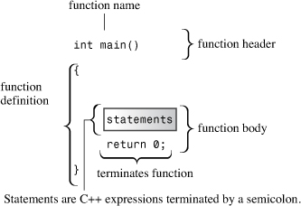
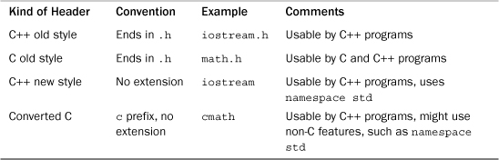
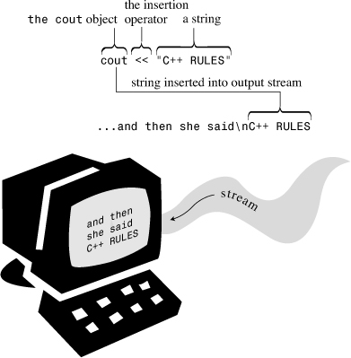
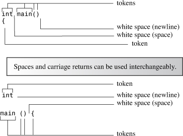
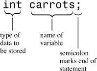
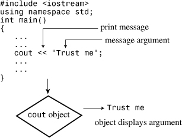
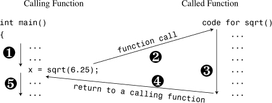
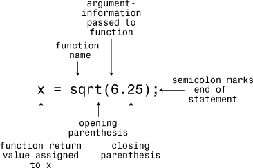
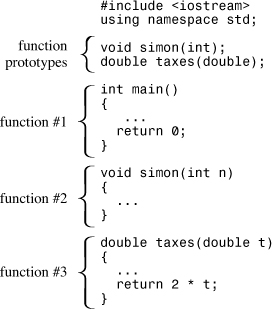
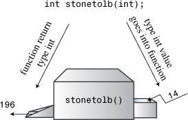

In this chapter you’ll learn about the following:
• Creating a C++ program
• The general format for a C++ program
• The #include directive
• The main() function
• Using the cout object for output
• Placing comments in a C++ program
• How and when to use endl
• Declaring and using variables
• Using the cin object for input
• Defining and using simple functions
When you construct a simple home, you begin with the foundation and the framework. If you don’t have a solid structure from the beginning, you’ll have trouble later filling in the details, such as windows, door frames, observatory domes, and parquet ballrooms. Similarly, when you learn a computer language, you should begin by learning the basic structure for a program. Only then can you move on to the details, such as loops and objects. This chapter gives you an overview of the essential structure of a C++ program and previews some topics—notably functions and classes—covered in much greater detail in later chapters. (The idea is to introduce at least some of the basic concepts gradually en route to the great awakenings that come later.)
Let’s begin with a simple C++ program that displays a message. Listing 2.1 uses the C++ cout (pronounced “see-out”) facility to produce character output. The source code includes several comments to the reader; these lines begin with //, and the compiler ignores them. C++ is case sensitive; that is, it discriminates between uppercase characters and lowercase characters. This means you must be careful to use the same case as in the examples. For example, this program uses cout, and if you substitute Cout or COUT, the compiler rejects your offering and accuses you of using unknown identifiers. (The compiler is also spelling sensitive, so don’t try kout or coot, either.) The cpp filename extension is a common way to indicate a C++ program; you might need to use a different extension, as described in Chapter 1, “Getting Started with C++.”
// myfirst.cpp -- displays a message
#include <iostream> // a PREPROCESSOR directive
int main() // function header
{ // start of function body
using namespace std; // make definitions visible
cout << "Come up and C++ me some time."; // message
cout << endl; // start a new line
cout << "You won't regret it!" << endl; // more output
return 0; // terminate main()
} // end of function body
After you use your editor of choice to copy this program (or else use the source code files available online from this book’s web page—check the registration link on the back cover for more information), you can use your C++ compiler to create the executable code, as Chapter 1 outlines. Here is the output from running the compiled program in Listing 2.1:
Come up and C++ me some time.
You won't regret it!
You construct C++ programs from building blocks called functions. Typically, you organize a program into major tasks and then design separate functions to handle those tasks. The example shown in Listing 2.1 is simple enough to consist of a single function named main(). The myfirst.cpp example has the following elements:
• Comments, indicated by the // prefix
• A preprocessor #include directive
• A function header: int main()
• A using namespace directive
• A function body, delimited by { and }
• Statements that uses the C++ cout facility to display a message
• A return statement to terminate the main() function
Let’s look at these various elements in greater detail. The main() function is a good place to start because some of the features that precede main(), such as the preprocessor directive, are simpler to understand after you see what main() does.
main() FunctionStripped of the trimmings, the sample program shown in Listing 2.1 has the following fundamental structure:
int main()
{
statements
return 0;
}
These lines state that there is a function called main(), and they describe how the function behaves. Together they constitute a function definition. This definition has two parts: the first line, int main(), which is called the function header, and the portion enclosed in braces ({ and }), which is the function body. (A quick search on the Web reveals braces also go by other names, including “curly brackets,” “flower brackets,” “fancy brackets,” and “chicken lips.” However, the ISO Standard uses the term “braces.”) Figure 2.1 shows the main() function. The function header is a capsule summary of the function’s interface with the rest of the program, and the function body represents instructions to the computer about what the function should do. In C++ each complete instruction is called a statement. You must terminate each statement with a semicolon, so don’t omit the semicolons when you type the examples.
Figure 2.1. The main() function.

The final statement in main(), called a return statement, terminates the function. You’ll learn more about the return statement as you read through this chapter.
Right now the main point to remember is that C++ syntax requires you to begin the definition of the main() function with this header: int main(). This chapter discusses the function header syntax in more detail later, in the section “Functions,” but for those who can’t put their curiosity on hold, here’s a preview.
In general, a C++ function is activated, or called, by another function, and the function header describes the interface between a function and the function that calls it. The part preceding the function name is called the function return type; it describes information flow from a function back to the function that calls it. The part within the parentheses following the function name is called the argument list or parameter list; it describes information flow from the calling function to the called function. This general description is a bit confusing when you apply it to main() because you normally don’t call main() from other parts of your program. Typically, however, main() is called by startup code that the compiler adds to your program to mediate between the program and the operating system (Unix, Windows 7, Linux, or whatever). In effect, the function header describes the interface between main() and the operating system.
Consider the interface description for main(), beginning with the int part. A C++ function called by another function can return a value to the activating (calling) function. That value is called a return value. In this case, main() can return an integer value, as indicated by the keyword int. Next, note the empty parentheses. In general, a C++ function can pass information to another function when it calls that function. The portion of the function header enclosed in parentheses describes that information. In this case, the empty parentheses mean that the main() function takes no information, or in the usual terminology, main() takes no arguments. (To say that main() takes no arguments doesn’t mean that main() is an unreasonable, authoritarian function. Instead, argument is the term computer buffs use to refer to information passed from one function to another.)
In short, the following function header states that the main() function returns an integer value to the function that calls it and that main() takes no information from the function that calls it:
int main()
Many existing programs use the classic C function header instead:
main() // original C style
Under classic C, omitting the return type is the same as saying that the function is type int. However, C++ has phased out that usage.
You can also use this variant:
int main(void) // very explicit style
Using the keyword void in the parentheses is an explicit way of saying that the function takes no arguments. Under C++ (but not C), leaving the parentheses empty is the same as using void in the parentheses. (In C, leaving the parentheses empty means you are remaining silent about whether there are arguments.)
Some programmers use this header and omit the return statement:
void main()
This is logically consistent because a void return type means the function doesn’t return a value. However, although this variant works on some systems, it’s not part of the C++ Standard. Thus, on other systems it fails. So you should avoid this form and use the C++ Standard form; it doesn’t require that much more effort to do it right.
Finally, the ISO C++ Standard makes a concession to those who complain about the tiresome necessity of having to place a return statement at the end of main(). If the compiler reaches the end of main() without encountering a return statement, the effect will be the same as if you ended main() with this statement:
return 0;
This implicit return is provided only for main() and not for any other function.
main() by Any Other Name Is Not the SameThere’s an extremely compelling reason to name the function in the myfirst.cpp program main(): You must do so. Ordinarily, a C++ program requires a function called main(). (And not, by the way, Main() or MAIN() or mane(). Remember, case and spelling count.) Because the myfirst.cpp program has only one function, that function must bear the responsibility of being main(). When you run a C++ program, execution always begins at the beginning of the main() function. Therefore, if you don’t have main(), you don’t have a complete program, and the compiler points out that you haven’t defined a main() function.
There are exceptions. For example, in Windows programming you can write a dynamic link library (DLL) module. This is code that other Windows programs can use. Because a DLL module is not a standalone program, it doesn’t need a main(). Programs for specialized environments, such as for a controller chip in a robot, might not need a main(). Some programming environments provide a skeleton program calling some nonstandard function, such as _tmain(); in that case there is a hidden main() that calls _tmain(). But your ordinary standalone program does need a main(); this books discusses that sort of program.
The double slash (//) introduces a C++ comment. A comment is a remark from the programmer to the reader that usually identifies a section of a program or explains some aspect of the code. The compiler ignores comments. After all, it knows C++ at least as well as you do, and, in any case, it’s incapable of understanding comments. As far as the compiler is concerned, Listing 2.1 looks as if it were written without comments, like this:
#include <iostream>
int main()
{
using namespace std;
cout << "Come up and C++ me some time.";
cout << endl;
cout << "You won't regret it!" << endl;
return 0;
}
C++ comments run from the // to the end of the line. A comment can be on its own line, or it can be on the same line as code. Incidentally, note the first line in Listing 2.1:
// myfirst.cpp -- displays a message
In this book all programs begin with a comment that gives the filename for the source code and a brief program summary. As mentioned in Chapter 1, the filename extension for source code depends on your C++ system. Other systems might use myfirst.C or myfirst.cxx for names.
You should use comments to document your programs. The more complex the program, the more valuable comments are. Not only do they help others to understand what you have done, but also they help you understand what you’ve done, especially if you haven’t looked at the program for a while.
iostream FileHere’s the short version of what you need to know. If your program is to use the usual C++ input or output facilities, you provide these two lines:
#include <iostream>
using namespace std;
There are some alternatives to using the second line, but let’s keep things simple for now. (If your compiler doesn’t like these lines, it’s not C++98 compatible, and it will have many other problems with the examples in this book.) That’s all you really must know to make your programs work, but now let’s take a more in-depth look.
C++, like C, uses a preprocessor. This is a program that processes a source file before the main compilation takes place. (Some C++ implementations, as you might recall from Chapter 1, use a translator program to convert a C++ program to C. Although the translator is also a form of preprocessor, we’re not discussing that preprocessor; instead, we’re discussing the one that handles directives whose names begin with #.) You don’t have to do anything special to invoke this preprocessor. It automatically operates when you compile the program.
Listing 2.1 uses the #include directive:
#include <iostream> // a PREPROCESSOR directive
This directive causes the preprocessor to add the contents of the iostream file to your program. This is a typical preprocessor action: adding or replacing text in the source code before it’s compiled.
This raises the question of why you should add the contents of the iostream file to the program. The answer concerns communication between the program and the outside world. The io in iostream refers to input, which is information brought into the program, and to output, which is information sent out from the program. C++’s input/output scheme involves several definitions found in the iostream file. Your first program needs these definitions to use the cout facility to display a message. The #include directive causes the contents of the iostream file to be sent along with the contents of your file to the compiler. In essence, the contents of the iostream file replace the #include <iostream> line in the program. Your original file is not altered, but a composite file formed from your file and iostream goes on to the next stage of compilation.
Files such as iostream are called include files (because they are included in other files) or header files (because they are included at the beginning of a file). C++ compilers come with many header files, each supporting a particular family of facilities. The C tradition has been to use the h extension with header files as a simple way to identify the type of file by its name. For example, the C math.h header file supports various C math functions. Initially, C++ did the same. For instance, the header file supporting input and output was named iostream.h. But C++ usage has changed. Now the h extension is reserved for the old C header files (which C++ programs can still use), whereas C++ header files have no extension. There are also C header files that have been converted to C++ header files. These files have been renamed by dropping the h extension (making it a C++-style name) and prefixing the filename with a c (indicating that it comes from C). For example, the C++ version of math.h is the cmath header file. Sometimes the C and C++ versions of C header files are identical, whereas in other cases the new version might have a few changes. For purely C++ header files such as iostream, dropping the h is more than a cosmetic change, for the h-free header files also incorporate namespaces, the next topic in this chapter. Table 2.1 summarizes the naming conventions for header files.
Table 2.1. Header File Naming Conventions

In view of the C tradition of using different filename extensions to indicate different file types, it appears reasonable to have some special extension, such as .hpp or .hxx, to indicate C++ header files. The ANSI/ISO committee felt so, too. The problem was agreeing on which extension to use, so eventually they agreed on nothing.
If you use iostream instead of iostream.h, you should use the following namespace directive to make the definitions in iostream available to your program:
using namespace std;
This is called a using directive. The simplest thing to do is to accept this for now and worry about it later (for example, in Chapter 9, “Memory Models and Namespaces”). But so you won’t be left completely in the dark, here’s an overview of what’s happening.
Namespace support is a C++ feature designed to simplify the writing of large programs and of programs that combine pre-existing code from several vendors and to help organize programs. One potential problem is that you might use two prepackaged products that both have, say, a function called wanda(). If you then use the wanda() function, the compiler won’t know which version you mean. The namespace facility lets a vendor package its wares in a unit called a namespace so that you can use the name of a namespace to indicate which vendor’s product you want. So Microflop Industries could place its definitions in a namespace called Microflop. Then Microflop::wanda() would become the full name for its wanda() function. Similarly, Piscine::wanda() could denote Piscine Corporation’s version of wanda(). Thus, your program could now use the namespaces to discriminate between various versions:
Microflop::wanda("go dancing?"); // use Microflop namespace version
Piscine::wanda("a fish named Desire"); // use Piscine namespace version
In this spirit, the classes, functions, and variables that are a standard component of C++ compilers are now placed in a namespace called std. This takes place in the h-free header files. This means, for example, that the cout variable used for output and defined in iostream is really called std::cout and that endl is really std::endl. Thus, you can omit the using directive and, instead, code in the following style:
std::cout << "Come up and C++ me some time.";
std::cout << std::endl;
However, many users don’t feel like converting pre-namespace code, which uses iostream.h and cout, to namespace code, which uses iostream and std::cout, unless they can do so without a lot of hassle. This is where the using directive comes in. The following line means you can use names defined in the std namespace without using the std:: prefix:
using namespace std;
This using directive makes all the names in the std namespace available. Modern practice regards this as a bit lazy and potentially a problem in large projects. The preferred approaches are to use the std:: qualifier or to use something called a using declaration to make just particular names available:
using std::cout; // make cout available
using std::endl; // make endl available
using std::cin; // make cin available
If you use these directives instead of the following, you can use cin and cout without attaching std:: to them:
using namespace std; // lazy approach, all names available
But if you need to use other names from iostream, you have to add them to the using list individually. This book initially uses the lazy approach for a couple reasons. First, for simple programs, it’s not really a big issue which namespace management technique you use. Second, I’d rather emphasize the more basic aspects about learning C++. Later, the book uses the other namespace techniques.
coutNow let’s look at how to display a message. The myfirst.cpp program uses the following C++ statement:
cout << "Come up and C++ me some time.";
The part enclosed within the double quotation marks is the message to print. In C++, any series of characters enclosed in double quotation marks is called a character string, presumably because it consists of several characters strung together into a larger unit. The << notation indicates that the statement is sending the string to cout; the symbols point the way the information flows. And what is cout? It’s a predefined object that knows how to display a variety of things, including strings, numbers, and individual characters. (An object, as you might remember from Chapter 1, is a particular instance of a class, and a class defines how data is stored and used.)
Well, using objects so soon is a bit awkward because you won’t learn about objects for several more chapters. Actually, this reveals one of the strengths of objects. You don’t have to know the innards of an object in order to use it. All you must know is its interface—that is, how to use it. The cout object has a simple interface. If string represents a string, you can do the following to display it:
cout << string;
This is all you must know to display a string, but now take a look at how the C++ conceptual view represents the process. In this view, the output is a stream—that is, a series of characters flowing from the program. The cout object, whose properties are defined in the iostream file, represents that stream. The object properties for cout include an insertion operator (<<) that inserts the information on its right into the stream. Consider the following statement (note the terminating semicolon):
cout << "Come up and C++ me some time.";
It inserts the string “Come up and C++ me some time.” into the output stream. Thus, rather than say that your program displays a message, you can say that it inserts a string into the output stream. Somehow, that sounds more impressive (see Figure 2.2).
Figure 2.2. Using cout to display a string.

endlNow let’s examine an odd-looking notation that appears in the second output statement in Listing 2.1:
cout << endl;
endl is a special C++ notation that represents the important concept of beginning a new line. Inserting endl into the output stream causes the screen cursor to move to the beginning of the next line. Special notations like endl that have particular meanings to cout are dubbed manipulators. Like cout, endl is defined in the iostream header file and is part of the std namespace.
Note that the cout facility does not move automatically to the next line when it prints a string, so the first cout statement in Listing 2.1 leaves the cursor positioned just after the period at the end of the output string. The output for each cout statement begins where the last output ended, so omitting endl would result in this output for Listing 2.1:
Come up and C++ me some time.You won't regret it!
Note that the Y immediately follows the period. Let’s look at another example. Suppose you try this code:
cout << "The Good, the";
cout << "Bad, ";
cout << "and the Ukulele";
cout << endl;
It produces the following output:
The Good, theBad, and the Ukulele
Again, note that the beginning of one string comes immediately after the end of the preceding string. If you want a space where two strings join, you must include it in one of the strings. (Remember that to try out these output examples, you have to place them in a complete program, with a main() function header and opening and closing braces.)
C++ has another, more ancient, way to indicate a new line in output—the C notation \n:
cout << "What's next?\n"; // \n means start a new line
The \n combination is considered to be a single character called the newline character.
If you are displaying a string, you need less typing to include the newline as part of the string than to tag an endl onto the end:
cout << "Pluto is a dwarf planet.\n"; // show text, go to next line
cout << "Pluto is a dwarf planet." << endl; // show text, go to next line
On the other hand, if you want to generate a newline by itself, both approaches take the same amount of typing, but most people find the keystrokes for endl to be more comfortable:
cout << "\n"; // start a new line
cout << endl; // start a new line
Typically, this book uses an embedded newline character (\n) when displaying quoted strings and the endl manipulator otherwise. One difference is that endl guarantees the output will be flushed (in, this case, immediately displayed onscreen) before the program moves on. You don’t get that guarantee with "\n", which means that it is possible on some systems in some circumstances a prompt might not be displayed until after you enter the information being prompted for.
The newline character is one example of special keystroke combinations termed “escape sequences”; they are further discussed in Chapter 3, “Dealing with Data.”
Some languages, such as FORTRAN, are line-oriented, with one statement to a line. For these languages, the carriage return (generated by pressing the Enter key or the Return key) serves to separate statements. In C++, however, the semicolon marks the end of each statement. This leaves C++ free to treat the carriage return in the same way as a space or a tab. That is, in C++ you normally can use a space where you would use a carriage return and vice versa. This means you can spread a single statement over several lines or place several statements on one line. For example, you could reformat myfirst.cpp as follows:
#include <iostream>
int
main
() { using
namespace
std; cout
<<
"Come up and C++ me some time."
; cout <<
endl; cout <<
"You won't regret it!" <<
endl;return 0; }
This is visually ugly but valid code. You do have to observe some rules. In particular, in C and C++ you can’t put a space, tab, or carriage return in the middle of an element such as a name, nor can you place a carriage return in the middle of a string. Here are examples of what you can’t do:
int ma in() // INVALID -- space in name
re
turn 0; // INVALID -- carriage return in word
cout << "Behold the Beans
of Beauty!"; // INVALID -- carriage return in string
(However, the raw string, added by C++11 and discussed briefly in Chapter 4, does allow including a carriage return in a string.)
The indivisible elements in a line of code are called tokens (see Figure 2.3). Generally, you must separate one token from the next with a space, tab, or carriage return, which collectively are termed white space. Some single characters, such as parentheses and commas, are tokens that need not be set off by white space. Here are some examples that illustrate when white space can be used and when it can be omitted:
Figure 2.3. Tokens and white space.

return0; // INVALID, must be return 0;
return(0); // VALID, white space omitted
return (0); // VALID, white space used
intmain(); // INVALID, white space omitted
int main() // VALID, white space omitted in ()
int main ( ) // ALSO VALID, white space used in ( )
Although C++ gives you much formatting freedom, your programs will be easier to read if you follow a sensible style. Having valid but ugly code should leave you unsatisfied. Most programmers use styles similar to that of Listing 2.1, which observes these rules:
• One statement per line
• An opening brace and a closing brace for a function, each of which is on its own line
• Statements in a function indented from the braces
• No whitespace around the parentheses associated with a function name
The first three rules have the simple intent of keeping the code clean and readable. The fourth helps to differentiate functions from some built-in C++ structures, such as loops, that also use parentheses. This book alerts you to other guidelines as they come up.
A C++ program is a collection of functions, and each function is a collection of statements. C++ has several kinds of statements, so let’s look at some of the possibilities. Listing 2.2 provides two new kinds of statements. First, a declaration statement creates a variable. Second, an assignment statement provides a value for that variable. Also the program shows a new capability for cout.
// carrots.cpp -- food processing program
// uses and displays a variable
#include <iostream>
int main()
{
using namespace std;
int carrots; // declare an integer variable
carrots = 25; // assign a value to the variable
cout << "I have ";
cout << carrots; // display the value of the variable
cout << " carrots.";
cout << endl;
carrots = carrots - 1; // modify the variable
cout << "Crunch, crunch. Now I have " << carrots << " carrots." << endl;
return 0;
}
A blank line separates the declaration from the rest of the program. This practice is the usual C convention, but it’s somewhat less common in C++. Here is the program output for Listing 2.2:
I have 25 carrots.
Crunch, crunch. Now I have 24 carrots.
The next few pages examine this program.
Computers are precise, orderly machines. To store an item of information in a computer, you must identify both the storage location and how much memory storage space the information requires. One relatively painless way to do this in C++ is to use a declaration statement to indicate the type of storage and to provide a label for the location. For example, the program in Listing 2.2 has this declaration statement (note the semicolon):
int carrots;
This statement provides two kinds of information: the type of memory storage needed and a label to attach to that storage. In particular, the statement declares that the program requires enough storage to hold an integer, for which C++ uses the label int. The compiler takes care of the details of allocating and labeling memory for that task. C++ can handle several kinds, or types, of data, and the int is the most basic data type. It corresponds to an integer, a number with no fractional part. The C++ int type can be positive or negative, but the size range depends on the implementation. Chapter 3 provides the details on int and the other basic types.
Naming the storage is the second task achieved. In this case, the declaration statement declares that henceforth the program will use the name carrots to identify the value stored at that location. carrots is called a variable because you can change its value. In C++ you must declare all variables. If you were to omit the declaration in carrots.cpp, the compiler would report an error when the program attempts to use carrots further on. (In fact, you might want to try omitting the declaration just to see how your compiler responds. Then if you see that response in the future, you’ll know to check for omitted declarations.)
In general, then, a declaration indicates the type of data to be stored and the name the program will use for the data that’s stored there. In this particular case, the program creates a variable called carrots in which it can store an integer (see Figure 2.4).
Figure 2.4. A variable declaration.

The declaration statement in the program is called a defining declaration statement, or definition, for short. This means that its presence causes the compiler to allocate memory space for the variable. In more complex situations, you can also have reference declarations. These tell the computer to use a variable that has already been defined elsewhere. In general, a declaration need not be a definition, but in this example it is.
If you’re familiar with C or Pascal, you’re already familiar with variable declarations. You also might have a modest surprise in store for you. In C and Pascal, all variable declarations normally come at the very beginning of a function or procedure. But C++ has no such restriction. Indeed, the usual C++ style is to declare a variable just before it is first used. That way, you don’t have to rummage back through a program to see what the type is. You’ll see an example of this later in this chapter. This style does have the disadvantage of not gathering all your variable names in one place; thus, you can’t tell at a glance what variables a function uses. (Incidentally, C99 now makes the rules for C declarations much the same as for C++.)
The C++ style for declaring variables is to declare a variable as close to its first use as possible.
An assignment statement assigns a value to a storage location. For example, the following statement assigns the integer 25 to the location represented by the variable carrots:
carrots = 25;
The = symbol is called the assignment operator. One unusual feature of C++ (and C) is that you can use the assignment operator serially. For example, the following is valid code:
int steinway;
int baldwin;
int yamaha;
yamaha = baldwin = steinway = 88;
The assignment works from right to left. First, 88 is assigned to steinway; then the value of steinway, which is now 88, is assigned to baldwin; then baldwin’s value of 88 is assigned to yamaha. (C++ follows C’s penchant for allowing weird-appearing code.)
The second assignment statement in Listing 2.2 demonstrates that you can change the value of a variable:
carrots = carrots - 1; // modify the variable
The expression to the right of the assignment operator (carrots – 1) is an example of an arithmetic expression. The computer will subtract 1 from 25, the value of carrots, obtaining 24. The assignment operator then stores this new value in the carrots location.
coutUp until now, the examples in this chapter have given cout strings to print. Listing 2.2 also gives cout a variable whose value is an integer:
cout << carrots;
The program doesn’t print the word carrots; instead, it prints the integer value stored in carrots, which is 25. Actually, this is two tricks in one. First, cout replaces carrots with its current numeric value of 25. Second, it translates the value to the proper output characters.
As you can see, cout works with both strings and integers. This might not seem particularly remarkable to you, but keep in mind that the integer 25 is something quite different from the string "25". The string holds the characters with which you write the number (that is, a 2 character and a 5 character). The program internally stores the numeric codes for the 2 character and the 5 character. To print the string, cout simply prints each character in the string. But the integer 25 is stored as a numeric value. Rather than store each digit separately, the computer stores 25 as a binary number. (Appendix A, “Number Bases,” discusses this representation.) The main point here is that cout must translate a number in integer form into character form before it can print it. Furthermore, cout is smart enough to recognize that carrots is an integer that requires conversion.
Perhaps the contrast with old C will indicate how clever cout is. To print the string "25" and the integer 25 in C, you could use C’s multipurpose output function printf():
printf("Printing a string: %s\n", "25");
printf("Printing an integer: %d\n", 25);
Without going into the intricacies of printf(), note that you must use special codes (%s and %d) to indicate whether you are going to print a string or an integer. And if you tell printf() to print a string but give it an integer by mistake, printf() is too unsophisticated to notice your mistake. It just goes ahead and displays garbage.
The intelligent way in which cout behaves stems from C++’s object-oriented features. In essence, the C++ insertion operator (<<) adjusts its behavior to fit the type of data that follows it. This is an example of operator overloading. In later chapters, when you take up function overloading and operator overloading, you’ll learn how to implement such smart designs yourself.
Let’s look at a couple more examples of statements. The program in Listing 2.3 expands on the preceding example by allowing you to enter a value while the program is running. To do so, it uses cin (pronounced “see-in”), the input counterpart to cout. Also the program shows yet another way to use that master of versatility, the cout object.
// getinfo.cpp -- input and output
#include <iostream>
int main()
{
using namespace std;
int carrots;
cout << "How many carrots do you have?" << endl;
cin >> carrots; // C++ input
cout << "Here are two more. ";
carrots = carrots + 2;
// the next line concatenates output
cout << "Now you have " << carrots << " carrots." << endl;
return 0;
}
Here is an example of output from the program in Listing 2.3:
How many carrots do you have?
12
Here are two more. Now you have 14 carrots.
The program has two new features: using cin to read keyboard input and combining four output statements into one. Let’s take a look.
cinAs the output from Listing 2.3 demonstrates, the value typed from the keyboard (12) is eventually assigned to the variable carrots. The following statement performs that wonder:
cin >> carrots;
Looking at this statement, you can practically see information flowing from cin into carrots. Naturally, there is a slightly more formal description of this process. Just as C++ considers output to be a stream of characters flowing out of the program, it considers input to be a stream of characters flowing into the program. The iostream file defines cin as an object that represents this stream. For output, the << operator inserts characters into the output stream. For input, cin uses the >> operator to extract characters from the input stream. Typically, you provide a variable to the right of the operator to receive the extracted information. (The symbols << and >> were chosen to visually suggest the direction in which information flows.)
Like cout, cin is a smart object. It converts input, which is just a series of characters typed from the keyboard, into a form acceptable to the variable receiving the information. In this case, the program declares carrots to be an integer variable, so the input is converted to the numeric form the computer uses to store integers.
coutThe second new feature of getinfo.cpp is combining four output statements into one. The iostream file defines the << operator so that you can combine (that is, concatenate) output as follows:
cout << "Now you have " << carrots << " carrots." << endl;
This allows you to combine string output and integer output in a single statement. The resulting output is the same as what the following code produces:
cout << "Now you have ";
cout << carrots;
cout << " carrots";
cout << endl;
While you’re still in the mood for cout advice, you can also rewrite the concatenated version this way, spreading the single statement over four lines:
cout << "Now you have "
<< carrots
<< " carrots."
<< endl;
That’s because C++’s free format rules treat newlines and spaces between tokens interchangeably. This last technique is convenient when the line width cramps your style.
Another point to note is that
Now you have 14 carrots.
Here are two more.
That’s because, as noted before, the output of one cout statement immediately follows the output of the preceding cout statement. This is true even if there are other statements in between.
cin and cout: A Touch of ClassYou’ve seen enough of cin and cout to justify your exposure to a little object lore. In particular, in this section you’ll learn more about the notion of classes. As Chapter 1 outlined briefly, classes are one of the core concepts for object-oriented programming (OOP) in C++.
A class is a data type the user defines. To define a class, you describe what sort of information it can represent and what sort of actions you can perform with that data. A class bears the same relationship to an object that a type does to a variable. That is, a class definition describes a data form and how it can be used, whereas an object is an entity created according to the data form specification. Or, in noncomputer terms, if a class is analogous to a category such as famous actors, then an object is analogous to a particular example of that category, such as Kermit the Frog. To extend the analogy, a class representation of actors would include definitions of possible actions relating to the class, such as Reading for a Part, Expressing Sorrow, Projecting Menace, Accepting an Award, and the like. If you’ve been exposed to different OOP terminology, it might help to know that the C++ class corresponds to what some languages term an object type, and the C++ object corresponds to an object instance or instance variable.
Now let’s get a little more specific. Recall the following declaration of a variable:
int carrots;
This creates a particular variable (carrots) that has the properties of the int type. That is, carrots can store an integer and can be used in particular ways—for addition and subtraction, for example. Now consider cout. It is an object created to have the properties of the ostream class. The ostream class definition (another inhabitant of the iostream file) describes the sort of data an ostream object represents and the operations you can perform with and to it, such as inserting a number or string into an output stream. Similarly, cin is an object created with the properties of the istream class, also defined in iostream.
The class describes all the properties of a data type, including actions that can be performed with it, and an object is an entity created according to that description.
You have learned that classes are user-defined types, but as a user, you certainly didn’t design the ostream and istream classes. Just as functions can come in function libraries, classes can come in class libraries. That’s the case for the ostream and istream classes. Technically, they are not built in to the C++ language; instead, they are examples of classes that the language standard specifies. The class definitions are laid out in the iostream file and are not built into the compiler. You can even modify these class definitions if you like, although that’s not a good idea. (More precisely, it is a truly dreadful idea.) The iostream family of classes and the related fstream (or file I/O) family are the only sets of class definitions that came with all early implementations of C++. However, the ANSI/ISO C++ committee added a few more class libraries to the Standard. Also most implementations provide additional class definitions as part of the package. Indeed, much of the current appeal of C++ is the existence of extensive and useful class libraries that support Unix, Macintosh, and Windows programming.
The class description specifies all the operations that can be performed on objects of that class. To perform such an allowed action on a particular object, you send a message to the object. For example, if you want the cout object to display a string, you send it a message that says, in effect, “Object! Display this!” C++ provides a couple ways to send messages. One way, using a class method, is essentially a function call like the ones you’ll see soon. The other way, which is the one used with cin and cout, is to redefine an operator. Thus, the following statement uses the redefined << operator to send the “display message” to cout:
cout << "I am not a crook."
In this case, the message comes with an argument, which is the string to be displayed. (See Figure 2.5 for a similar example.)
Figure 2.5. Sending a message to an object.

Because functions are the modules from which C++ programs are built and because they are essential to C++ OOP definitions, you should become thoroughly familiar with them. Some aspects of functions are advanced topics, so the main discussion of functions comes later, in Chapter 7, “Functions: C++’s Programming Modules,” and Chapter 8, “Adventures in Functions.” However, if we deal now with some basic characteristics of functions, you’ll be more at ease and more practiced with functions later. The rest of this chapter introduces you to these function basics.
C++ functions come in two varieties: those with return values and those without them. You can find examples of each kind in the standard C++ library of functions, and you can create your own functions of each type. Let’s look at a library function that has a return value and then examine how you can write your own simple functions.
A function that has a return value produces a value that you can assign to a variable or use in some other expression. For example, the standard C/C++ library includes a function called sqrt() that returns the square root of a number. Suppose you want to calculate the square root of 6.25 and assign it to the variable x. You can use the following statement in your program:
x = sqrt(6.25); // returns the value 2.5 and assigns it to x
The expression sqrt(6.25) invokes, or calls, the sqrt() function. The expression sqrt(6.25) is termed a function call, the invoked function is termed the called function, and the function containing the function call is termed the calling function (see Figure 2.6).
Figure 2.6. Calling a function.

The value in the parentheses (6.25, in this example) is information that is sent to the function; it is said to be passed to the function. A value that is sent to a function this way is called an argument or parameter (see Figure 2.7). The sqrt() function calculates the answer to be 2.5 and sends that value back to the calling function; the value sent back is termed the return value of the function. Think of the return value as what is substituted for the function call in the statement after the function finishes its job. Thus, this example assigns the return value to the variable x. In short, an argument is information sent to the function, and the return value is a value sent back from the function.
Figure 2.7. Function call syntax.

That’s practically all there is to it, except that before the C++ compiler uses a function, it must know what kind of arguments the function uses and what kind of return value it has. That is, does the function return an integer? a character? a number with a decimal fraction? a guilty verdict? or something else? If it lacks this information, the compiler won’t know how to interpret the return value. The C++ way to convey this information is to use a function prototype statement.
A function prototype does for functions what a variable declaration does for variables: It tells what types are involved. For example, the C++ library defines the sqrt() function to take a number with (potentially) a fractional part (like 6.25) as an argument and to return a number of the same type. Some languages refer to such numbers as real numbers, but the name C++ uses for this type is double. (You’ll see more of double in Chapter 3.) The function prototype for sqrt() looks like this:
double sqrt(double); // function prototype
The initial double means sqrt() returns a type double value. The double in the parentheses means sqrt() requires a double argument. So this prototype describes sqrt() exactly as used in the following code:
double x; // declare x as a type double variable
x = sqrt(6.25);
The terminating semicolon in the prototype identifies it as a statement and thus makes it a prototype instead of a function header. If you omit the semicolon, the compiler interprets the line as a function header and expects you to follow it with a function body that defines the function.
When you use sqrt() in a program, you must also provide the prototype. You can do this in either of two ways:
• You can type the function prototype into your source code file yourself.
• You can include the cmath (math.h on older systems) header file, which has the prototype in it.
The second way is better because the header file is even more likely than you to get the prototype right. Every function in the C++ library has a prototype in one or more header files. Just check the function description in your manual or with online help, if you have it, and the description tells you which header file to use. For example, the description of the sqrt() function should tell you to use the cmath header file. (Again, you might have to use the older math.h header file, which works for both C and C++ programs.)
Don’t confuse the function prototype with the function definition. The prototype, as you’ve seen, only describes the function interface. That is, it describes the information sent to the function and the information sent back. The definition, however, includes the code for the function’s workings—for example, the code for calculating the square root of a number. C and C++ divide these two features—prototype and definition—for library functions. The library files contain the compiled code for the functions, whereas the header files contain the prototypes.
You should place a function prototype ahead of where you first use the function. The usual practice is to place prototypes just before the definition of the main() function. Listing 2.4 demonstrates the use of the library function sqrt(); it provides a prototype by including the cmath file.
// sqrt.cpp -- using the sqrt() function
#include <iostream>
#include <cmath> // or math.h
int main()
{
using namespace std;
double area;
cout << "Enter the floor area, in square feet, of your home: ";
cin >> area;
double side;
side = sqrt(area);
cout << "That's the equivalent of a square " << side
<< " feet to the side." << endl;
cout << "How fascinating!" << endl;
return 0;
}
Here’s a sample run of the program in Listing 2.4:
Enter the floor area, in square feet, of your home: 1536
That's the equivalent of a square 39.1918 feet to the side.
How fascinating!
Because sqrt() works with type double values, the example makes the variables that type. Note that you declare a type double variable by using the same form, or syntax, as when you declare a type int variable:
type-name variable-name;
Type double allows the variables area and side to hold values with decimal fractions, such as 1536.0 and 39.1918. An apparent integer, such as 1536, is stored as a real value with a decimal fraction part of .0 when stored in a type double variable. As you’ll see in Chapter 3, type double encompasses a much greater range of values than type int.
C++ allows you to declare new variables anywhere in a program, so sqrt.cpp didn’t declare side until just before using it. C++ also allows you to assign a value to a variable when you create it, so you could also have done this:
double side = sqrt(area);
You’ll learn more about this process, called initialization, in Chapter 3.
Note that cin knows how to convert information from the input stream to type double, and cout knows how to insert type double into the output stream. As noted earlier, these objects are smart.
Some functions require more than one item of information. These functions use multiple arguments separated by commas. For example, the math function pow() takes two arguments and returns a value equal to the first argument raised to the power given by the second argument. It has this prototype:
double pow(double, double); // prototype of a function with two arguments
If, say, you wanted to find 58 (5 to the eighth power), you would use the function like this:
answer = pow(5.0, 8.0); // function call with a list of arguments
Other functions take no arguments. For example, one of the C libraries (the one associated with the cstdlib or the stdlib.h header file) has a rand() function that has no arguments and that returns a random integer. Its prototype looks like this:
int rand(void); // prototype of a function that takes no arguments
The keyword void explicitly indicates that the function takes no arguments. If you omit void and leave the parentheses empty, C++ interprets this as an implicit declaration that there are no arguments. You could use the function this way:
myGuess = rand(); // function call with no arguments
Note that unlike some computer languages, in C++ you must use the parentheses in the function call even if there are no arguments.
There also are functions that have no return value. For example, suppose you wrote a function that displayed a number in dollars-and-cents format. You could send to it an argument of, say, 23.5, and it would display $23.50 onscreen. Because this function sends a value to the screen instead of to the calling program, it doesn’t require a return value. You indicate this in the prototype by using the keyword void for the return type:
void bucks(double); // prototype for function with no return value
Because bucks() doesn’t return a value, you can’t use this function as part of an assignment statement or of some other expression. Instead, you have a pure function call statement:
bucks(1234.56); // function call, no return value
Some languages reserve the term function for functions with return values and use the terms procedure or subroutine for those without return values, but C++, like C, uses the term function for both variations.
The standard C library provides more than 140 predefined functions. If one fits your needs, by all means use it. But often you have to write your own, particularly when you design classes. Anyway, it’s fun to design your own functions, so now let’s examine that process. You’ve already used several user-defined functions, and they have all been named main(). Every C++ program must have a main() function, which the user must define. Suppose you want to add a second user-defined function. Just as with a library function, you can call a user-defined function by using its name. And, as with a library function, you must provide a function prototype before using the function, which you typically do by placing the prototype above the main() definition. But now you, not the library vendor, must provide source code for the new function. The simplest way is to place the code in the same file after the code for main(). Listing 2.5 illustrates these elements.
// ourfunc.cpp -- defining your own function
#include <iostream>
void simon(int); // function prototype for simon()
int main()
{
using namespace std;
simon(3); // call the simon() function
cout << "Pick an integer: ";
int count;
cin >> count;
simon(count); // call it again
cout << "Done!" << endl;
return 0;
}
void simon(int n) // define the simon() function
{
using namespace std;
cout << "Simon says touch your toes " << n << " times." << endl;
} // void functions don't need return statements
The main() function calls the simon() function twice, once with an argument of 3 and once with a variable argument count. In between, the user enters an integer that’s used to set the value of count. The example doesn’t use a newline character in the cout prompting message. This results in the user input appearing on the same line as the prompt. Here is a sample run of the program in Listing 2.5:
Simon says touch your toes 3 times.
Pick an integer: 512
Simon says touch your toes 512 times.
Done!
The definition for the simon() function in Listing 2.5 follows the same general form as the definition for main(). First, there is a function header. Then, enclosed in braces, comes the function body. You can generalize the form for a function definition as follows:
type functionname(argumentlist)
{
statements
}
Note that the source code that defines simon() follows the closing brace of main(). Like C, and unlike Pascal, C++ does not allow you to embed one function definition inside another. Each function definition stands separately from all others; all functions are created equal (see Figure 2.8).
Figure 2.8. Function definitions occur sequentially in a file.

The simon() function in Listing 2.5 has this header:
void simon(int n)
The initial void means that simon() has no return value. So calling simon() doesn’t produce a number that you can assign to a variable in main(). Thus, the first function call looks like this:
simon(3); // ok for void functions
Because poor simon() lacks a return value, you can’t use it this way:
simple = simon(3); // not allowed for void functions
The int n within the parentheses means that you are expected to use simon() with a single argument of type int. The n is a new variable assigned the value passed during a function call. Thus, the following function call assigns the value 3 to the n variable defined in the simon() header:
simon(3);
When the cout statement in the function body uses n, it uses the value passed in the function call. That’s why simon(3) displays a 3 in its output. The call to simon(count) in the sample run causes the function to display 512 because that was the value entered for count. In short, the header for simon() tells you that this function takes a single type int argument and that it doesn’t have a return value.
Let’s review main()’s function header:
int main()
The initial int means that main() returns an integer value. The empty parentheses (which optionally could contain void) means that main() has no arguments. Functions that have return values should use the keyword return to provide the return value and to terminate the function. That’s why you’ve been using the following statement at the end of main():
return 0;
This is logically consistent: main() is supposed to return a type int value, and you have it return the integer 0. But, you might wonder, to what are you returning a value? After all, nowhere in any of your programs have you seen anything calling main():
squeeze = main(); // absent from our programs
The answer is that you can think of your computer’s operating system (Unix, say, or Windows) as calling your program. So main()’s return value is returned not to another part of the program but to the operating system. Many operating systems can use the program’s return value. For example, Unix shell scripts and Window’s command-line interface batch files can be designed to run programs and test their return values, usually called exit values. The normal convention is that an exit value of zero means the program ran successfully, whereas a nonzero value means there was a problem. Thus, you can design a C++ program to return a nonzero value if, say, it fails to open a file. You can then design a shell script or batch file to run that program and to take some alternative action if the program signals failure.
Let’s go one step further and write a function that uses the return statement. The main() function already illustrates the plan for a function with a return value: Give the return type in the function header and use return at the end of the function body. You can use this form to solve a weighty problem for those visiting the United Kingdom. In the United Kingdom, many bathroom scales are calibrated in stone instead of in U.S. pounds or international kilograms. The word stone is both singular and plural in this context. (The English language does lack the internal consistency of, say, C++.) One stone is 14 pounds, and the program in Listing 2.6 uses a function to make this conversion.
// convert.cpp -- converts stone to pounds
#include <iostream>
int stonetolb(int); // function prototype
int main()
{
using namespace std;
int stone;
cout << "Enter the weight in stone: ";
cin >> stone;
int pounds = stonetolb(stone);
cout << stone << " stone = ";
cout << pounds << " pounds." << endl;
return 0;
}
int stonetolb(int sts)
{
return 14 * sts;
}
Here’s a sample run of the program in Listing 2.6:
Enter the weight in stone: 15
15 stone = 210 pounds.
In main(), the program uses cin to provide a value for the integer variable stone. This value is passed to the stonetolb() function as an argument and is assigned to the variable sts in that function. stonetolb() then uses the return keyword to return the value of 14 * sts to main(). This illustrates that you aren’t limited to following return with a simple number. Here, by using a more complex expression, you avoid the bother of having to create a new variable to which to assign the value before returning it. The program calculates the value of that expression (210 in this example) and returns the resulting value. If returning the value of an expression bothers you, you can take the longer route:
int stonetolb(int sts)
{
int pounds = 14 * sts;
return pounds;
}
Both versions produce the same result. The second version, because it separates the computation process from the return process, is easier to read and modify.
In general, you can use a function with a return value wherever you would use a simple constant of the same type. For example, stonetolb() returns a type int value. This means you can use the function in the following ways:
int aunt = stonetolb(20);
int aunts = aunt + stonetolb(10);
cout << "Ferdie weighs " << stonetolb(16) << " pounds." << endl;
In each case, the program calculates the return value and then uses that number in these statements.
As these examples show, the function prototype describes the function interface—that is, how the function interacts with the rest of the program. The argument list shows what sort of information goes into the function, and the function type shows the type of value returned. Programmers sometimes describe functions as black boxes (a term from electronics) specified by the flow of information into and out of them. The function prototype perfectly portrays that point of view (see Figure 2.9).
Figure 2.9. The function prototype and the function as a black box.

The stonetolb() function is short and simple, yet it embodies a full range of functional features:
• It has a header and a body.
• It accepts an argument.
• It requires a prototype.
Consider stonetolb() as a standard form for function design. You’ll further explore functions in Chapters 7 and 8. In the meantime, the material in this chapter should give you a good feel for how functions work and how they fit into C++.
using Directive in Multifunction ProgramsNotice that Listing 2.5 places a using directive in each of the two functions:
using namespace std;
This is because each function uses cout and thus needs access to the cout definition from the std namespace.
There’s another way to make the std namespace available to both functions in Listing 2.5, and that’s to place the directive outside and above both functions:
// ourfunc1.cpp -- repositioning the using directive
#include <iostream>
using namespace std; // affects all function definitions in this file
void simon(int);
int main()
{
simon(3);
cout << "Pick an integer: ";
int count;
cin >> count;
simon(count);
cout << "Done!" << endl;
return 0;
}
void simon(int n)
{
cout << "Simon says touch your toes " << n << " times." << endl;
}
The current prevalent philosophy is that it’s preferable to be more discriminating and limit access to the std namespace to only those functions that need access. For example, in Listing 2.6, only main() uses cout, so there is no need to make the std namespace available to the stonetolb() function. Thus, the using directive is placed inside the main() function only, limiting std namespace access to just that function.
In summary, you have several choices for making std namespace elements available to a program. Here are some:
• You can place the following above the function definitions in a file, making all the contents of the std namespace available to every function in the file:
using namespace std;
• You can place the following in a specific function definition, making all the contents of the std namespace available to that specific function:
using namespace std;
• Instead of using
using namespace std;
• you can place using declarations like the following in a specific function definition and make a particular element, such as cout, available to that function:
using std::cout;
• You can omit the using directives and declarations entirely and use the std:: prefix whenever you use elements from the std namespace:
std::cout << "I'm using cout and endl from the std namespace" << std::endl;
A C++ program consists of one or more modules called functions. Programs begin executing at the beginning of the function called main() (all lowercase), so you should always have a function by this name. A function, in turn, consists of a header and a body. The function header tells you what kind of return value, if any, the function produces and what sort of information it expects arguments to pass to it. The function body consists of a series of C++ statements enclosed in paired braces ({}).
C++ statement types include the following:
• Declaration statement— A declaration statement announces the name and the type of a variable used in a function.
• Assignment statement— An assignment statement uses the assignment operator (=) to assign a value to a variable.
• Message statement— A message statement sends a message to an object, initiating some sort of action.
• Function call— A function call activates a function. When the called function terminates, the program returns to the statement in the calling function immediately following the function call.
• Function prototype— A function prototype declares the return type for a function, along with the number and type of arguments the function expects.
• Return statement— A return statement sends a value from a called function back to the calling function.
A class is a user-defined specification for a data type. This specification details how information is to be represented and also the operations that can be performed with the data. An object is an entity created according to a class prescription, just as a simple variable is an entity created according to a data type description.
C++ provides two predefined objects (cin and cout) for handling input and output. They are examples of the istream and ostream classes, which are defined in the iostream file. These classes view input and output as streams of characters. The insertion operator (<<), which is defined for the ostream class, lets you insert data into the output stream, and the extraction operator (>>), which is defined for the istream class, lets you extract information from the input stream. Both cin and cout are smart objects, capable of automatically converting information from one form to another according to the program context.
C++ can use the extensive set of C library functions. To use a library function, you should include the header file that provides the prototype for the function.
Now that you have an overall view of simple C++ programs, you can go on in the next chapters to fill in details and expand horizons.
You can find the answers to the chapter review at the end of each chapter in Appendix J, “Answers to Chapter Review.”
1. What are the modules of C++ programs called?
2. What does the following preprocessor directive do?
#include <iostream>
3. What does the following statement do?
using namespace std;
4. What statement would you use to print the phrase “Hello, world” and then start a new line?
5. What statement would you use to create an integer variable with the name cheeses?
6. What statement would you use to assign the value 32 to the variable cheeses?
7. What statement would you use to read a value from keyboard input into the variable cheeses?
8. What statement would you use to print “We have X varieties of cheese,” where the current value of the cheeses variable replaces X?
9. What do the following function prototypes tell you about the functions?
int froop(double t);
void rattle(int n);
int prune(void);
10. When do you not have to use the keyword return when you define a function?
11. Suppose your main() function has the following line:
cout << "Please enter your PIN: ";
And suppose the compiler complains that cout is an unknown identifier. What is the likely cause of this complaint, and what are three ways to fix the problem?
1. Write a C++ program that displays your name and address (or if you value your privacy, a fictitious name and address).
2. Write a C++ program that asks for a distance in furlongs and converts it to yards. (One furlong is 220 yards.)
3. Write a C++ program that uses three user-defined functions (counting main() as one) and produces the following output:
Three blind mice
Three blind mice
See how they run
See how they run
One function, called two times, should produce the first two lines, and the remaining function, also called twice, should produce the remaining output.
4. Write a program that asks the user to enter his or her age. The program then should display the age in months:
Enter your age: 29
Your age in months is 384.
5. Write a program that has main() call a user-defined function that takes a Celsius temperature value as an argument and then returns the equivalent Fahrenheit value. The program should request the Celsius value as input from the user and display the result, as shown in the following code:
Please enter a Celsius value: 20
20 degrees Celsius is 68 degrees Fahrenheit.
For reference, here is the formula for making the conversion:
Fahrenheit = 1.8 × degrees Celsius + 32.0
6. Write a program that has main() call a user-defined function that takes a distance in light years as an argument and then returns the distance in astronomical units. The program should request the light year value as input from the user and display the result, as shown in the following code:
Enter the number of light years: 4.2
4.2 light years = 265608 astronomical units.
An astronomical unit is the average distance from the earth to the sun (about 150,000,000 km or 93,000,000 miles), and a light year is the distance light travels in a year (about 10 trillion kilometers or 6 trillion miles). (The nearest star after the sun is about 4.2 light years away.) Use type double (as in Listing 2.4) and this conversion factor:
1 light year = 63,240 astronomical units
7. Write a program that asks the user to enter an hour value and a minute value. The main() function should then pass these two values to a type void function that displays the two values in the format shown in the following sample run:
Enter the number of hours: 9
Enter the number of minutes: 28
Time: 9:28